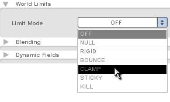

Torque 2D - Shooter Tutorial - Part 3
3. Adding Player Input
Good, we now have our sky set up, as well as our player's ship in the level. However, there isn't anything for a player to do in the game so far. This section of the tutorial deals with adding player input into the game.
First, we will give the player's ship the ability to move around the game world. To refer to our ship in code, we need to give it a name and a class. To do that, we need to select our ship and go into the Edit tab. Once we are in our edit tab we need to collapse the Scene Object rollout and expand the Scripting rollout (as shown in Figure 3.1.1).
Figure 3.1.1
You will notice that there are only six options in this rollout. For right now, we are only going to use the first two: Name and Class. The name of an object is what you will call it when you program in Torque Script. The class is basically the group your object belongs to. Every object with the same class will be able to do the same things. So, in the Name and Class options, you will need to type in a name for your ship and a class for your ship. If you are unfamiliar with programming, I suggest that you name your ship and class the same as myself so that the code we will be using later won't have to be changed to fit your ship. For my project, I named my ship "pShip" and my class "playerShip" (as shown in Figure 3.1.2).
Figure 3.1.2
Save your
level with whatever name you want.
Once you have your level saved correctly, you can safely exit T2D and get ready
to do some scripting.
|
***Note*** If you do not have a TorqueScript editor such as Torsion or TorqueDev, you can easily edit TorqueScript in a simple text editor such as Notepad. You should never edit code in a program such as Microsoft Word ©. |
Browse out to your "games/yourProjectName/gameScripts" folder. This is where your game scripts should be located. Since we haven't created any scripts for our game yet, we should only see a "game.cs" file (.cs is the Torque Script file extension). This folder is where we will create all of our additional script files that make up our game. Create a text file in this folder and name it "player.cs". Be sure that when you create your file you add that .cs extension so T2D will recognize it as a script file. Now you can open your newly created "player.cs" in any text editing program (Windows users can right click and choose "Open With" and use notepad or wordpad, Mac users can control click and choose "Open With" and use TextEdit). If you remember we set our ship's class to "playerShip" so we are going to add the following function to our player.cs:
function playerShip::onLevelLoaded(%this, %scenegraph)
{
//set the player's ship name to the instance
$pShip = %this;
moveMap.bindCmd(keyboard, "w", "pShipUp();", "pShipUpStop();");
moveMap.bindCmd(keyboard, "s", "pShipDown();", "pShipDownStop();");
moveMap.bindCmd(keyboard, "a", "pShipLeft();", "pShipLeftStop();");
moveMap.bindCmd(keyboard, "d", "pShipRight();", "pShipRightStop();");
}
Code Sample 3.2.1
This function does two things. First, it sets up our script so that when you see %this in code, it refers to our player ship in our level. Secondly, it binds the "w", "a", "s", and "d" keys to some movement functions that we haven't created yet, one function when the player presses down on the key, another when they let up on the key. Let's create our movement functions right now.
|
***Note*** If you are editing script in a text editor such as notepad, it is good to note that when you save your file to make sure that you are saving it as a .cs file. Oftentimes you can accidentally save a file as scriptFile.cs.txt - meaning that it is a text file. Make sure that your text editor recognizes your script files as such, or else they won't work when you try to run them. |
Add this code right below the onLevelLoaded function.
function pShipUp()
{
$pShip.moveUp = true;
$pShip.updateMovement();
}
function pShipDown()
{
$pShip.moveDown = true;
$pShip.updateMovement();
}
function pShipLeft()
{
$pShip.moveLeft = true;
$pShip.updateMovement();
}
function pShipRight()
{
$pShip.moveRight = true;
$pShip.updateMovement();
}
function pShipLeftStop()
{
$pShip.moveLeft = false;
$pShip.updateMovement();
}
function pShipRightStop()
{
$pShip.moveRight = false;
$pShip.updateMovement();
}
function pShipUpStop()
{
$pShip.moveUp = false;
$pShip.updateMovement();
}
function pShipDownStop()
{
$pShip.moveDown = false;
$pShip.updateMovement();
}
Code Sample 3.2.2
These functions handle movement for the ship. Basically whenever your player presses a key, it accesses the appropriate movement function, sets a movement variable to "true", and accesses a new function called updateMovement(), which doesn't exist yet.
The updateMovement() function should go right after your onLevelLoaded function but before your 8 movement functions:
function playerShip::updateMovement(%this)
{
if(%this.moveLeft)
{
%this.setLinearVelocityX( -$pShip.hSpeed );
}
if(%this.moveRight)
{
%this.setLinearVelocityX( $pShip.hSpeed );
}
if(%this.moveUp)
{
%this.setLinearVelocityY( -$pShip.vSpeed );
}
if(%this.moveDown)
{
%this.setLinearVelocityY( $pShip.vSpeed );
}
if(!%this.moveLeft && !%this.moveRight)
{
%this.setLinearVelocityX( 0 );
}
if(!%this.moveUp && !%this.moveDown)
{
%this.setLinearVelocityY( 0 );
}
}
Code Sample 3.2.3
This update movement function is what makes the whole thing work. What it basically does is read the input given by any of the movement functions and decides which direction and speed to move the player. It also waits until a key is released and then stops the ship.
Now that we have our code completely written, we need to tell the engine to run player.cs when it runs the game. To do this, exec player.cs from game.cs by adding the line below to your startGame() function.
exec("./player.cs");
Code Sample 3.2.4
This line of code basically tells your game to run whatever is in your player.cs file when the game starts. Now I want to draw your attention to these lines of code that we wrote in our updateMovement function in our player.cs file :
%this.setLinearVelocityX( $pShip.hSpeed ); %this.setLinearVelocityY( -$pShip.vSpeed );
Code Sample 3.2.5
You will notice that we are setting our velocity to hSpeed and vSpeed, two variables that don't exist yet. We need to create these variables for our ship before our ship will move around. Luckily, the Level Builder has an easy way to add variables to an object.
First, you will need to open up your project in the Level Builder again and select your ship. Once you have your ship selected you need to go back into the edit tab and find the Dynamic Fields rollout at the bottom of the list (as shown in Figure 3.2.1). Note: You may need to resize your right panel, by dragging outwards, to see the plus button.
Figure 3.2.1
Figure 3.2.3
You will notice that when you create a variable you can no longer affect its name. However, you can still affect the value of that variable, which is why it is useful.
Now that we have our ship's code ready, it is time to Play it!
Once you are inside your game, you should be moving around smoothly! If you aren't moving like you are supposed to be, make sure that your code matches mine and that your variables are named correctly. When you get your ship working, you may want to tweak your speeds to get something you are happy with, thanks to them being dynamic fields, they can be easily changed in the Level Builder.
If you play around for a minute, you may notice that you can fly right off the map! This could very easily ruin gameplay since the player may lose their ship off the edge of the screen and not know where it is - or cheat and fly above the enemies. This is an easy fix, you simply have to adjust the world limits for this object. Make the world limits just inside the camera view (as shown in Figure 3.3.3).
|
|
Figure 3.3.4
In
this rollout we can tell our objects how they should react when colliding with
the world limit box we just set up. Presently mine was set to OFF, however,
since I want the ship to be bound by the limit, I need to change my Limit Mode
to CLAMP (as shown in Figure 3.3.5). What CLAMP means is that it will
simply stop me when I hit the side. If you want to see what the other Limit
Modes do, simply select them and test them. Though some effects are interesting
to say the least, you will quickly understand why we chose CLAMP. Now that we
have our player in the game, we should give him some opponents.

Figure 3.3.5